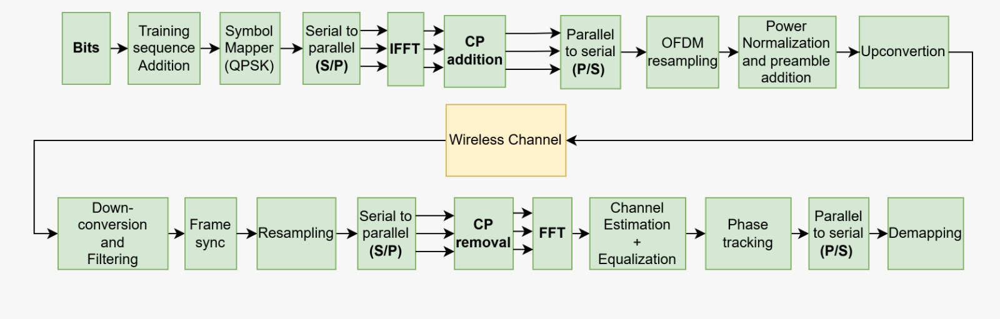
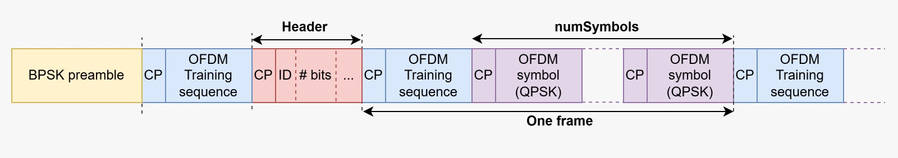
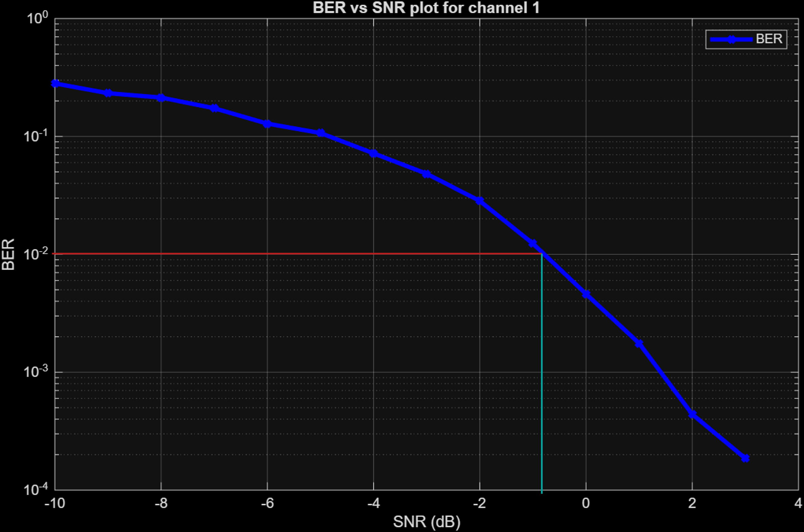
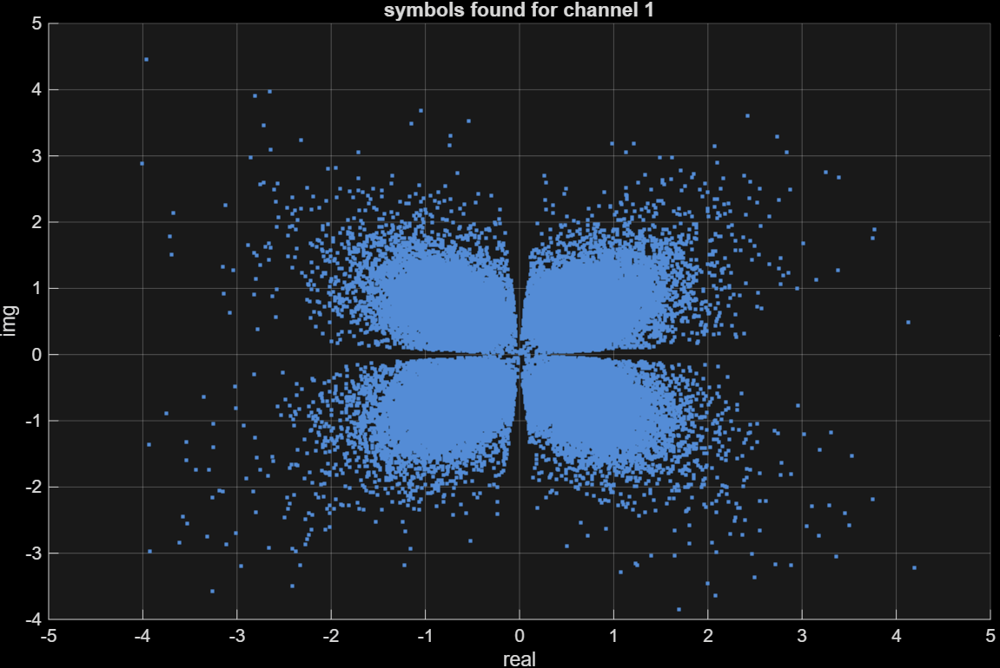

Co-designed and co-implemented a full Orthogonal Frequency Division Multiplexing (OFDM) communication system for acoustic transmission between a speaker and a microphone using MATLAB.
Acoustic OFDM Transceiver
Objective
Key Contributions
- Protocol Architecture: Architected the software structure and communication protocol, enabling the system to distinguish and decode different payload types (text, binary images).
- Data Integrity: Implemented a custom frame structure containing header metadata and Cyclic Redundancy Check (CRC-8) for robust error detection in noisy acoustic channels.
- System Integration: Integrated frame synchronization, channel estimation (Zero-Forcing), and phase tracking (Viterbi-Viterbi) into a cohesive transceiver chain.
- Performance: Achieved 0% Bit Error Rate (BER) in high-SNR conditions and successfully demonstrated image transmission.
Visuals

Fig 1. System Block Diagram
Fig 2. Communication Protocol Data Block Architecture
Fig 3. BER vs SNR Analysis in AWGN Channel
Fig 4. Received Symbols (Low SNR) in AWGN Channel